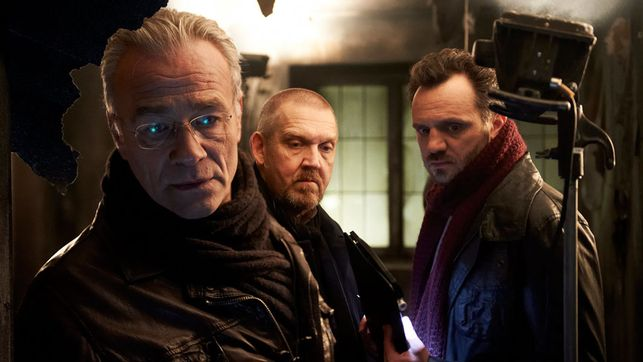

Der Fall Reinhardt
905. Folge
Inhalt
Schon wieder Feueralarm in Köln: Eine Serie von Brandanschlägen hält die Stadt in Atem, jetzt gibt es die ersten Todesopfer. In einem vollkommen ausgebrannten Bungalow kamen drei Kinder ums Leben. Max Ballauf und Freddy Schenk brauchen einen schnellen Fahndungserfolg, denn die Abstände zwischen den Brandanschlägen werden immer kürzer. Am Tatort treffen die Kommissare die unter Schock stehende Karen Reinhardt. Sie hat eine leichte Rauchvergiftung, sonst keine Verletzungen. Dass ihre Kinder den Brand nicht überlebt haben, will sie nicht wahrhaben. Und von ihrem Mann Gerald Reinhardt fehlt jede Spur. Nachbarn sagen, er sei bei der Firma Cologne Airtech als Luftfahrtingenieur beschäftigt. Doch die Ermittlungen ergeben: Hier wurde ihm bereits vor zwei Jahren gekündigt ...
Besetzung
Hauptkommissar Max Ballauf - Klaus J. Behrendt
Hauptkommissar Freddy Schenk - Dietmar Bär
Dr. Joseph Roth [Gerichtsmediziner] - Joe Bausch
Tobias Reisser [Aushilfsassistent] - Patrick Abozen
Vater - Ben Becker
Mutter - Susanne Wolff
N.N - Peter Benedict
Uwe Schatz - Roland Silbernagl
N.N - Katja Heinrich
N.N - Karyn von Ostholt-Haas
Ralph Meins - Christian Furrer
Stab
2nd Unit Kamera - Ergun Cankaya
Außenrequisite - Fred Gutberg
Beleuchter/Beleuchtungstechnik - Dirk Henkel
Beleuchter/Beleuchtungstechnik - Henning Battenfeld
Continuity - Anne Lensing
Garderobe - Gesa Koepe
Innenrequisite - Jan Feil
Kamera - Holly Fink
Kameraassistenz - Teja Hendrik Schwede
Kameraassistenz - David Schaufert
Kamerabühne - Arne Schriever
Kostüme/Kostümbild - Lore Tesch
Maske/Maskenbildner - Ursel Frank
Motivaufnahmeleitung - Lilian Scharnhorst
Oberbeleuchter - Jürgen Tomadini
Produktionsleitung - Sabine Schild
Produzent - Sonja Goslicki
Regieassistenz - Torsten Junker
Stunts - Jürgen Klein
Szenenbild - Frank Polosek
Szenenbildassistenz - Susann Hinz
Ton/Filmtonassistenz - Sebastian Leukert
Daten zur Folge
| Sendelänge | 88:30 |
| Drehbuch | Dagmar Gabler |
| Erstsendung | 23.3.2014 |
| Sender | WDR |
| Regie | Torsten C. Fischer |
| Bildformat | 16:9 |
| Redaktion | Frank Tönsmann |
| Drehort | Köln und Umgebung |
Wiederholungen
| 23.05.14 20:15 | MDR |
| 02.04.14 20:15 | ARD |
| 04.04.14 20:15 | 1FEST |